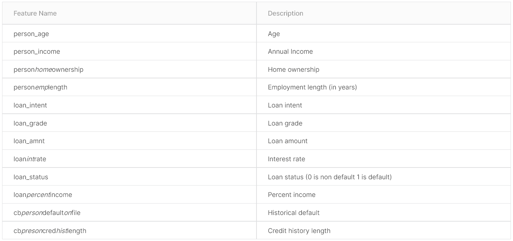
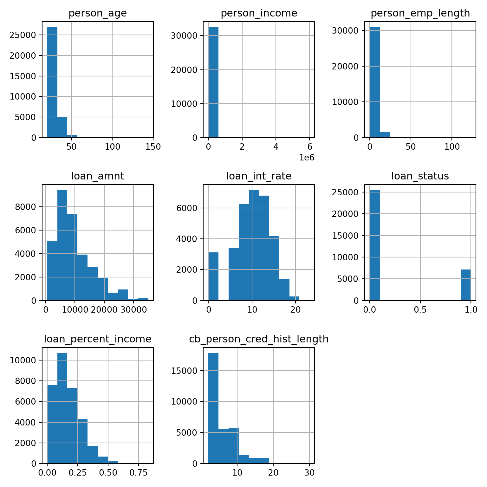
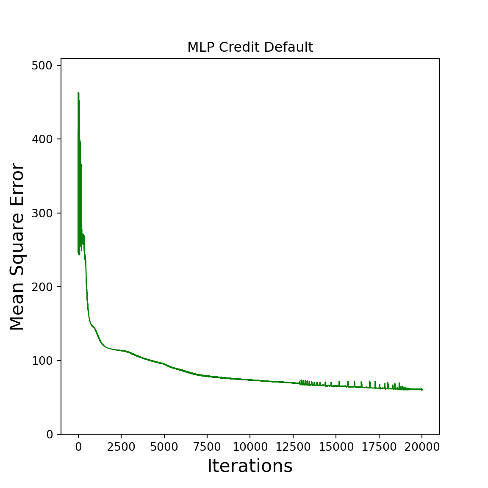
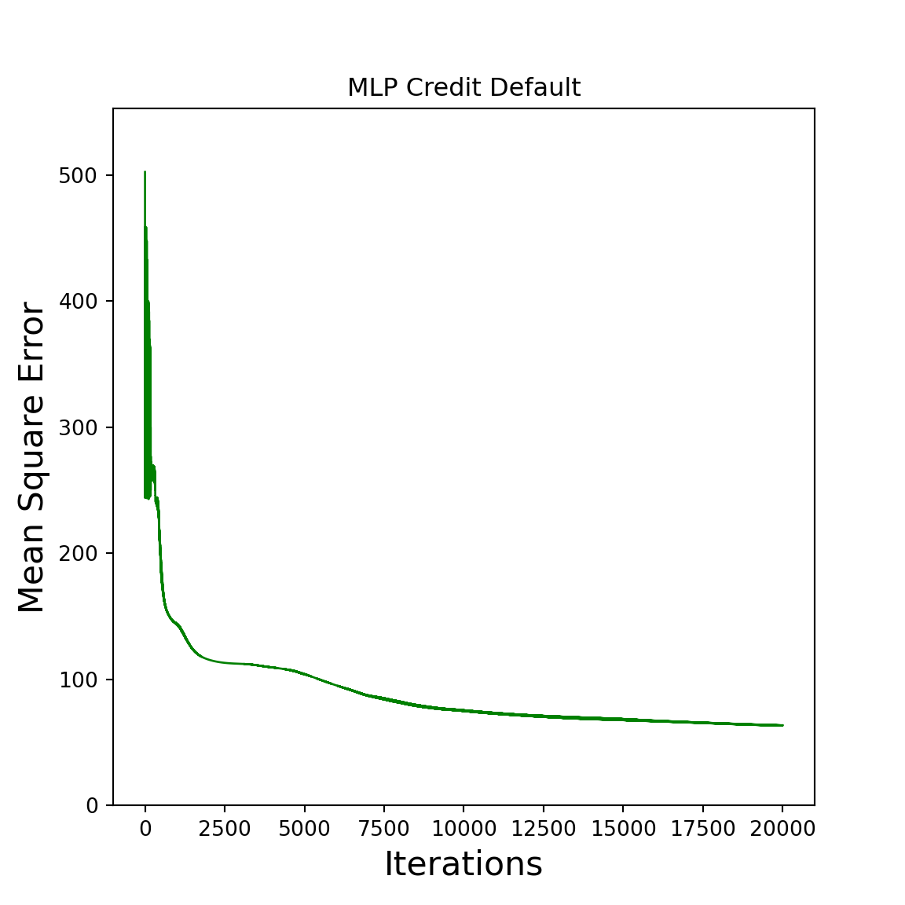

Chapter 6 Loading and analysing the data
First all do we need to load the csv via pandas and analyse it:
pd.set_option('display.float_format', '{:.2f}'.format)
import pandas as pd
import matplotlib.pyplot as pyplot
data = pd.read_csv("example_data/credit_risk_dataset.csv").fillna(0)
data.shape
data.head()## (32581, 12)
## person_age person_income person_home_ownership person_emp_length loan_intent loan_grade loan_amnt loan_int_rate loan_status loan_percent_income cb_person_default_on_file cb_person_cred_hist_length
## 0 22 59000 RENT 123.00 PERSONAL D 35000 16.02 1 0.59 Y 3
## 1 21 9600 OWN 5.00 EDUCATION B 1000 11.14 0 0.10 N 2
## 2 25 9600 MORTGAGE 1.00 MEDICAL C 5500 12.87 1 0.57 N 3
## 3 23 65500 RENT 4.00 MEDICAL C 35000 15.23 1 0.53 N 2
## 4 24 54400 RENT 8.00 MEDICAL C 35000 14.27 1 0.55 Y 4You can find the detailed information about the columns on kaggle, additionaly to the next table:

The important column is load_status that determinates the customers credit default and is used as the correct outputs \(Y\). All other columns are considered as the input matrix \(X\). First of all do we need to analyse the underlying data a little bit more. The columns with numerical data are visualized in the folLowing charts:
l = ["person_age", "person_income", "person_emp_length", "loan_amnt", "loan_int_rate", "loan_status", "loan_percent_income", "cb_person_cred_hist_length"]
data[l].hist(bins=10,figsize=(8,8))
pyplot.tight_layout()
pyplot.show()## array([[<AxesSubplot:title={'center':'person_age'}>,
## <AxesSubplot:title={'center':'person_income'}>,
## <AxesSubplot:title={'center':'person_emp_length'}>],
## [<AxesSubplot:title={'center':'loan_amnt'}>,
## <AxesSubplot:title={'center':'loan_int_rate'}>,
## <AxesSubplot:title={'center':'loan_status'}>],
## [<AxesSubplot:title={'center':'loan_percent_income'}>,
## <AxesSubplot:title={'center':'cb_person_cred_hist_length'}>,
## <AxesSubplot:>]], dtype=object) All other input columns are categorical that cant be processed by Neuronal Networks. Luckily there exist some methods to convert the categories to numbers for example with Ordinal Encoding, One hot Encoding and Embedding (more information can be found here). I will choose the simplest, the Ordinal Encoding, for our dataset. Ordinal Encoding just maps numbers to the categories. The best would be to arrange the categories as good as possible and just map numbers to it like in the following code:
data = data.replace({"Y": 1, "N":0})
data["person_home_ownership"] = data["person_home_ownership"].replace({'OWN':1, 'RENT':2, 'MORTGAGE':3, 'OTHER':4})
data["loan_intent"] = data["loan_intent"].replace({'PERSONAL':1, 'EDUCATION':2, 'MEDICAL':3, 'VENTURE':4, 'HOMEIMPROVEMENT':5,'DEBTCONSOLIDATION':6})
data["loan_grade"] = data["loan_grade"].replace({'A':1, 'B':2, 'C':3, 'D':4, 'E':5, 'F':6, 'G':7})
data.head()## person_age person_income person_home_ownership person_emp_length loan_intent loan_grade loan_amnt loan_int_rate loan_status loan_percent_income cb_person_default_on_file cb_person_cred_hist_length
## 0 22 59000 2 123.00 1 4 35000 16.02 1 0.59 1 3
## 1 21 9600 1 5.00 2 2 1000 11.14 0 0.10 0 2
## 2 25 9600 3 1.00 3 3 5500 12.87 1 0.57 0 3
## 3 23 65500 2 4.00 3 3 35000 15.23 1 0.53 0 2
## 4 24 54400 2 8.00 3 3 35000 14.27 1 0.55 1 4Its definitely not the best way to encode the categorical data but its the simplest method and it dosent increase the size of the input matrix.
Additionaly its important to normalize the data which leads to more stability and speed for the learning process (for more information). We will normalize the data to the interval \([0,1]\) because we are using the sigmoid function. The following function will do the trick for the whole numpy array you are putting in:
def NormalizeData(np_arr):
for i in range(np_arr.shape[1]):
np_arr[:,i] = (np_arr[:,i] - np.min(np_arr[:,i])) / (np.max(np_arr[:,i]) - np.min(np_arr[:,i]))
return(np_arr)Now do we need to split the given data in a training set and a test set, convert the pandas dataframe to a numpy array and normalize it:
training_n = 2000
X_train = NormalizeData( data.loc[0:(training_n-1), data.columns != 'loan_status'].to_numpy() )
Y_train = data.loc[0:(training_n-1), data.columns == 'loan_status'].to_numpy()
X_test = NormalizeData( data.loc[training_n:, data.columns != 'loan_status'].to_numpy() )
Y_test = data.loc[training_n:, data.columns == 'loan_status'].to_numpy()Now its time to load the created functions from the previews chapters
def generate_weights(n_input, n_output, hidden_layer_neurons):
W = []
for i in range(len(hidden_layer_neurons)+1):
if i == 0: # first layer
W.append(np.random.random((n_input+1, hidden_layer_neurons[i])))
elif i == len(hidden_layer_neurons): # last layer
W.append(np.random.random((hidden_layer_neurons[i-1]+1, n_output)))
else: # middle layers
W.append(np.random.random((hidden_layer_neurons[i-1]+1, hidden_layer_neurons[i])))
return(W)
def add_ones_to_input(x):
return(np.append(x, np.array([np.ones(len(x))]).T, axis=1))
def sigmoid(x):
return 1.0 / (1.0 + np.exp(-x))
def deriv_sigmoid(x):
return x * (1 - x)
def forward(x, w):
return( sigmoid(x @ w) )
def backward(IN, OUT, W, Y, grad, k):
if k == len(grad)-1:
grad[k] = deriv_sigmoid(OUT[k]) * (Y-OUT[k])
else:
grad[k] = deriv_sigmoid(OUT[k]) *(grad[k+1] @ W[k+1][0:len(W[k+1])-1].T)
return(grad)and we are creating a simple wrapper for the training and the test phase:
def train(X, Y, hidden_layer_neurons, alpha, epochs):
n_input = len(X_train[0])
n_output = len(Y_train[0])
W = generate_weights(n_input, n_output, hidden_layer_neurons)
errors = []
for i in range(epochs):
IN = []
OUT = []
grad = [None]*len(W)
for k in range(len(W)):
if k==0:
IN.append(add_ones_to_input(X))
else:
IN.append(add_ones_to_input(OUT[k-1]))
OUT.append(forward(x=IN[k], w=W[k]))
errors.append(Y_train - OUT[-1])
for k in range(len(W)-1,-1, -1):
grad = backward(IN, OUT, W, Y, grad, k)
for k in range(len(W)):
W[k] = W[k] + alpha * (IN[k].T @ grad[k])
return W, errors
def test(X_test, W):
for i in range(len(W)):
X_test = forward(add_ones_to_input(X_test), W[i])
return(X_test)The train function is just a simple wrapper around the things done in the last chapter and will fit the weights to the given x_train and Y_train. The test function only contains the forward pass to get the given output of the NN to evaluate the quality. Its time to train the NN with the first 2000 rows of the given data, 20000 epochs, alpha of 0.01 and two hidden layers with 11 and 4 neurons:
W_train, errors_train = train(X_train, Y_train, hidden_layer_neurons = np.array([11,4]), alpha = 0.01, epochs = 20000)The return contains multiple values, that are assigned with the a, b = fun_that_returns_2_vals() pattern. We can visualize the learning process with the familiar linechart:
def mean_square_error(error):
return( 0.5 * np.sum(error ** 2) )
ms_errors_train = np.array(list(map(mean_square_error, errors_train)))
def plot_error(errors, title):
x = list(range(len(errors)))
y = np.array(errors)
pyplot.figure(figsize=(6,6))
pyplot.plot(x, y, "g", linewidth=1)
pyplot.xlabel("Iterations", fontsize = 16)
pyplot.ylabel("Mean Square Error", fontsize = 16)
pyplot.title(title)
pyplot.ylim(0,max(errors)*1.1)
pyplot.show()
plot_error(ms_errors_train, "MLP Credit Default")
Now its time to test the NN on the never seen X_test and Y_test dataset.
result_test = test(X_test, W_train)
print("Mean Square error over all testdata: ", mean_square_error(Y_test - result_test))## Mean Square error over all testdata: 2944.4912492971584Because the Mean Square Error is hard to interpret we will classify the output of the NN to be 1 or 0 and analyze the given answer for the credit defaults.
6.1 Appendix (complete code)
import numpy as np
import matplotlib.pyplot as pyplot
import pandas as pd
from sklearn.metrics import confusion_matrix
np.random.seed(0)
data = pd.read_csv("example_data/credit_risk_dataset.csv").fillna(0)
data = data.replace({"Y": 1, "N":0})
data["person_home_ownership"] = data["person_home_ownership"].replace({'OWN':1, 'RENT':2, 'MORTGAGE':3, 'OTHER':4})
data["loan_intent"] = data["loan_intent"].replace({'PERSONAL':1, 'EDUCATION':2, 'MEDICAL':3, 'VENTURE':4, 'HOMEIMPROVEMENT':5,'DEBTCONSOLIDATION':6})
data["loan_grade"] = data["loan_grade"].replace({'A':1, 'B':2, 'C':3, 'D':4, 'E':5, 'F':6, 'G':7})
def NormalizeData(np_arr):
for i in range(np_arr.shape[1]):
np_arr[:,i] = (np_arr[:,i] - np.min(np_arr[:,i])) / (np.max(np_arr[:,i]) - np.min(np_arr[:,i]))
return(np_arr)
training_n = 2000
X_train = NormalizeData( data.loc[0:(training_n-1), data.columns != 'loan_status'].to_numpy() )
Y_train = data.loc[0:(training_n-1), data.columns == 'loan_status'].to_numpy()
X_test = NormalizeData( data.loc[training_n:, data.columns != 'loan_status'].to_numpy() )
Y_test = data.loc[training_n:, data.columns == 'loan_status'].to_numpy()
def generate_weights(n_input, n_output, hidden_layer_neurons):
W = []
for i in range(len(hidden_layer_neurons)+1):
if i == 0: # first layer
W.append(np.random.random((n_input+1, hidden_layer_neurons[i])))
elif i == len(hidden_layer_neurons): # last layer
W.append(np.random.random((hidden_layer_neurons[i-1]+1, n_output)))
else: # middle layers
W.append(np.random.random((hidden_layer_neurons[i-1]+1, hidden_layer_neurons[i])))
return(W)
def add_ones_to_input(x):
return(np.append(x, np.array([np.ones(len(x))]).T, axis=1))
def sigmoid(x):
return 1.0 / (1.0 + np.exp(-x))
def deriv_sigmoid(x):
return x * (1 - x)
def forward(x, w):
return( sigmoid(x @ w) )
def backward(IN, OUT, W, Y, grad, k):
if k == len(grad)-1:
grad[k] = deriv_sigmoid(OUT[k]) * (Y-OUT[k])
else:
grad[k] = deriv_sigmoid(OUT[k]) *(grad[k+1] @ W[k+1][0:len(W[k+1])-1].T)
return(grad)
def train(X, Y, hidden_layer_neurons, alpha, epochs):
n_input = len(X_train[0])
n_output = len(Y_train[0])
W = generate_weights(n_input, n_output, hidden_layer_neurons)
errors = []
for i in range(epochs):
IN = []
OUT = []
grad = [None]*len(W)
for k in range(len(W)):
if k==0:
IN.append(add_ones_to_input(X))
else:
IN.append(add_ones_to_input(OUT[k-1]))
OUT.append(forward(x=IN[k], w=W[k]))
errors.append(Y_train - OUT[-1])
for k in range(len(W)-1,-1, -1):
grad = backward(IN, OUT, W, Y, grad, k)
for k in range(len(W)):
W[k] = W[k] + alpha * (IN[k].T @ grad[k])
return W, errors
W_train, errors_train = train(X_train, Y_train, hidden_layer_neurons = np.array([11,4]), alpha = 0.01, epochs = 20000)
def mean_square_error(error):
return( 0.5 * np.sum(error ** 2) )
ms_errors_train = np.array(list(map(mean_square_error, errors_train)))
def plot_error(errors, title):
x = list(range(len(errors)))
y = np.array(errors)
pyplot.figure(figsize=(6,6))
pyplot.plot(x, y, "g", linewidth=1)
pyplot.xlabel("Iterations", fontsize = 16)
pyplot.ylabel("Mean Square Error", fontsize = 16)
pyplot.title(title)
pyplot.ylim(0,max(errors)*1.1)
pyplot.show()
plot_error(ms_errors_train, "MLP Credit Default")
def test(X_test, W):
for i in range(len(W)):
X_test = forward(add_ones_to_input(X_test), W[i])
return(X_test)
result_test = test(X_test, W_train)
print("Mean Square error over all testdata: ", mean_square_error(Y_test - result_test))
def classify(Y_approx):
return( np.round(Y_approx,0) )
classified_error = Y_test - classify(result_test)
print("Mean Square error over all classified testdata: ", mean_square_error(classified_error))
print("Probability of a wrong output: ", np.round(np.sum(np.abs(classified_error)) / len(classified_error) * 100, 2), "%" )
print("Probability of a right output: ", np.round((1 - np.sum(np.abs(classified_error)) / len(classified_error))*100,2),"%" )
confusion_matrix(Y_test, classify(result_test))
## Mean Square error over all testdata: 2135.358966722297
## Mean Square error over all classified testdata: 2458.5
## Probability of a wrong output: 16.08 %
## Probability of a right output: 83.92 %
## array([[21463, 2843],
## [ 2074, 4201]], dtype=int64)